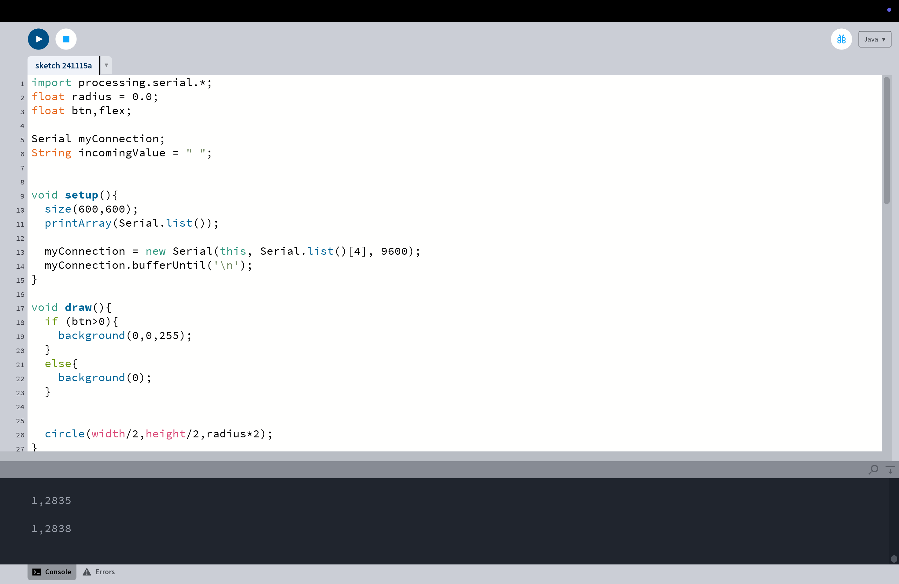

Arduino Button and Flex Sensor Project
Functionality Overview
This project uses an Arduino to control background color and a circle's size based on input from a button and a flex sensor:
- Button: Controls the background color.
- When pressed, the background turns blue.
- When released, the background turns black.
- Flex Sensor: Controls the size of a circle.
- The circle's radius dynamically adjusts based on the flex sensor's bend, mapping its values from 0 to half the canvas width.
Hardware Connections
Button:
- Connect one pin to digital pin 13 on the Arduino.
- Connect the other pin to GND.
- Use a 10kΩ pull-down resistor between pin 13 and VCC.
Flex Sensor:
- Connect one end to analog pin A0 on the Arduino.
- Connect the other end to GND.
- Add a 10kΩ resistor between A0 and VCC to create a voltage divider circuit.
Project Demonstration
Below is a demonstration video showcasing the functionality:
Process Documentation
Here are some pictures and videos documenting the process of setting up the Arduino board and connecting the components:
Arduino Board Setup


Connecting the Components

Code Snippet 1

Code Snippet 2
Code Snippet 3
Connection Steps
- Connect the button to digital pin 13 and GND on the Arduino. When pressed, pin 13 reads HIGH, and when released, it reads LOW.
- Connect one end of the flex sensor to analog pin A0 and the other end to GND. Use a voltage divider circuit to read the bending values.
- Connect the Arduino to a computer using a USB cable.
Connection Diagram